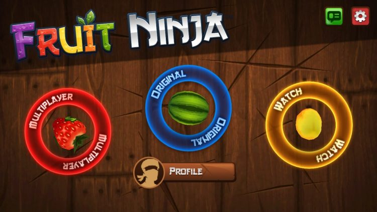

2010 - 2020
How Gaming Changed From 2010

In 2010 the launch of software that makes gaming more accessible and portable came to the forefront. The Nintendo Switch console and the introduction of live-streaming platforms like Twitch and Microsoft's Mixer, as well as gaming subscriptions like Apple Arcade and Xbox Game Pass becoming the norm. Many of your favorite video games were discovered from 2010-2020 such as Minecraft, Fruit Ninja, Skylanders, Fortnite, Among Us, Clash of Clans, World of Tanks, and etc.
Gaming Subscriptions
Gaming Subscriptions became the future of gaming. The Xbox and PlayStation platforms are largely built around monthly subscriptions required for even basic features like online multiplayer. That's not as true for the Nintendo Switch yet, but that console has a multitiered subscription option as well. The subscription model is beneficial to gaming companies because as with other industries, it provides predictable revenue and gives consumers ways to connect more deeply with products they love.
Mobile Gaming

While mobile games have been around since 1997, such as the early Nokia cellphones Snake, they really came into focus with the widespread availability of Wi-Fi in 2002 and the iOs App Store launch in 2007. The defining moment in the last decade for mobile games is the in-app purchase functionality introduced by Apple in 2009. Since then, mobile games have risen rapidly. Niantic Inc.'s location-based AR mobile game Pokemon Go hit $3 billion in lifetime revenue in 2021. Mario Kart Tour scored Nintendo's biggest first-month mobile launch with 129.3 downloads in the first 30 days of release, generating over $37.4 million in player spending since September. These are just a few of the games responsible for the market's steady rise of late due to mobile gaming. Mobile games now make up 59 percent of the digital game market share. In October, video game company Zynga posted record revenue figures fueled by on-the-go content, with $328 million from its mobile games division, amounting to 95 percent of the company's total revenue.
